Logistics · UX/UI Design
Transportation Management Platform
Making complex freight operations easier to navigate. I designed the structures and interactions that help people scan loads, inspect a shipment and manage the records behind it, across connected modules of a transportation management platform.
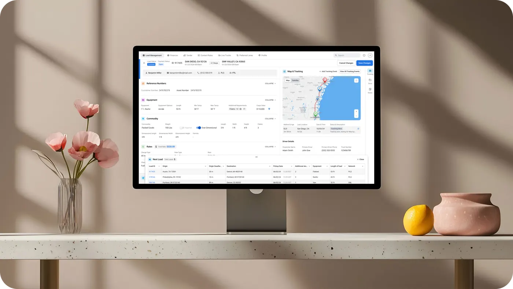
Overview
I worked as the UX/UI product designer on a transportation management platform that brings together freight loads, customer and carrier records, and administrative workflows.
The task was to organise a large amount of operational information into a workspace that supports both a broad overview and detailed, task-specific work. I translated requirements into interface structures, built prototypes and designed consistent interactions across connected modules.
The project is covered by an NDA, so this case describes selected design challenges and approaches without naming the client or showing confidential data. A responsive mobile interface for field operations was part of the project; the examples here focus on the desktop workspace.
The challenge
The same information has to serve different ways of working. A user may scan a list of loads, spot an exception, inspect a shipment, update a record or check the customer and carrier behind it, and each task needs a different level of detail.
Three questions guided the design:
- What should users see when reviewing many records?
- Which information belongs in the view of a single load?
- How can the workspace adapt to different operational needs without becoming inconsistent?
Process
I started with the structures that would shape the rest of the platform: navigation, system controls, information hierarchy and status visualisation. User surveys and low-fidelity prototypes helped validate the key workflows before I moved to detailed interfaces.
Then I built interactive high-fidelity prototypes for user testing and used the findings to refine further decisions.
Loadboard: a configurable workspace
The Loadboard is the central module for reviewing and managing freight loads. Users need to compare many records without opening each one, so the density is deliberate. The job was to make it manageable through structure, filtering and customisation.
A data grid is combined with search, filters, saved views, column controls and contextual actions, which narrow the workspace to the task at hand.
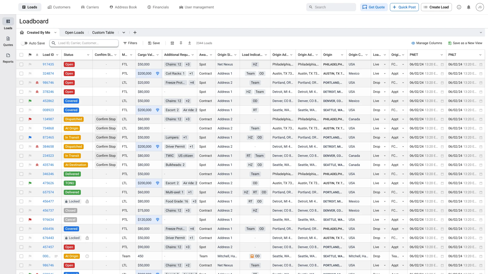
Loadboard: views users define themselves
One table configuration cannot serve every operational workflow. Users create custom views: they choose columns, change their order, pin important fields and set a default view. Fields are grouped, and column search helps to find the right one in a long list.
Personalisation is part of the workspace rather than a separate dashboard-building task, so people return to a useful arrangement instead of configuring the same table again.
Loadboard: hierarchy inside dense rows
A load record mixes identifiers, statuses, locations, dates, requirements and extra indicators. I separated them through alignment, typography, labels and compact visual markers. Repeated structures make records easy to compare, while status and priority carry more visual weight.
Column-level controls and hover details add depth without putting everything at the same level.
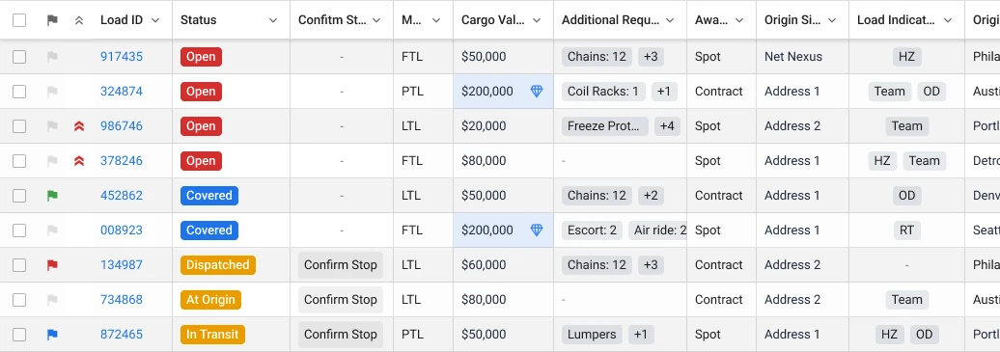
Loadboard: selection and action
The Loadboard supports work with a single record and with many at once. Selecting rows opens an action context inside the table, so the records and the operation stay visible together.
Selection states, action menus, editable cells and dialogs were designed as one interaction model rather than as a static table.
Status and risk: progress and urgency
A load's lifecycle status and its operational urgency mean different things. Status labels work alongside priority markers, flags and risk indicators: the first communicates progress, the others draw attention to conditions that need review.
Risk components combine colour with labels, icons and context, so the meaning does not depend on colour alone. The same signals stay recognisable in table rows, supporting details and related components.
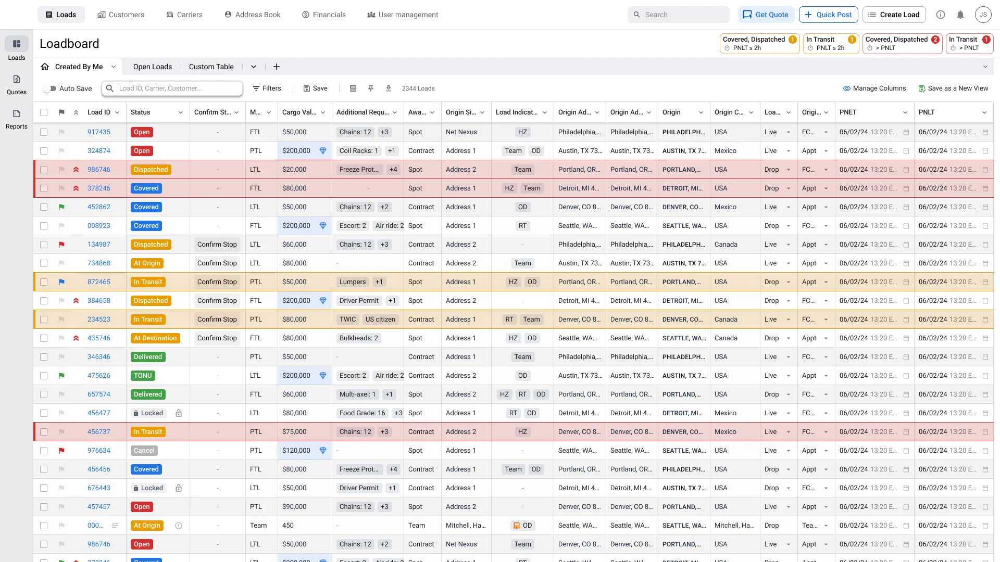
Load details: from comparison to investigation
The Loadboard is for scanning and comparing; the load preview is for looking into one shipment. It moves from a compact overview to more detailed operational context:
- Status and financial summary
- Route and tracking information
- Shipment requirements
- Carrier information
- Notes and documents
- A sequence of stops
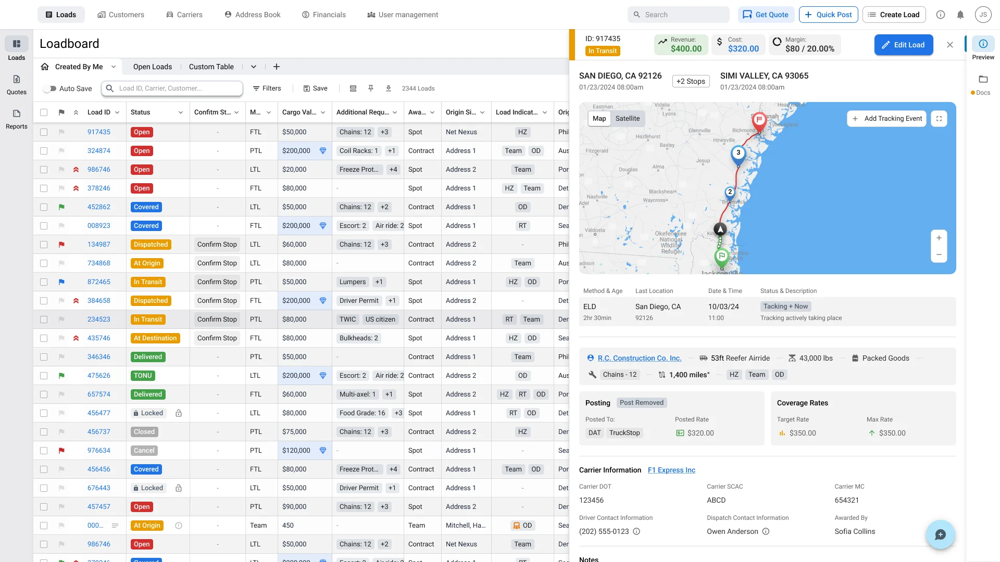
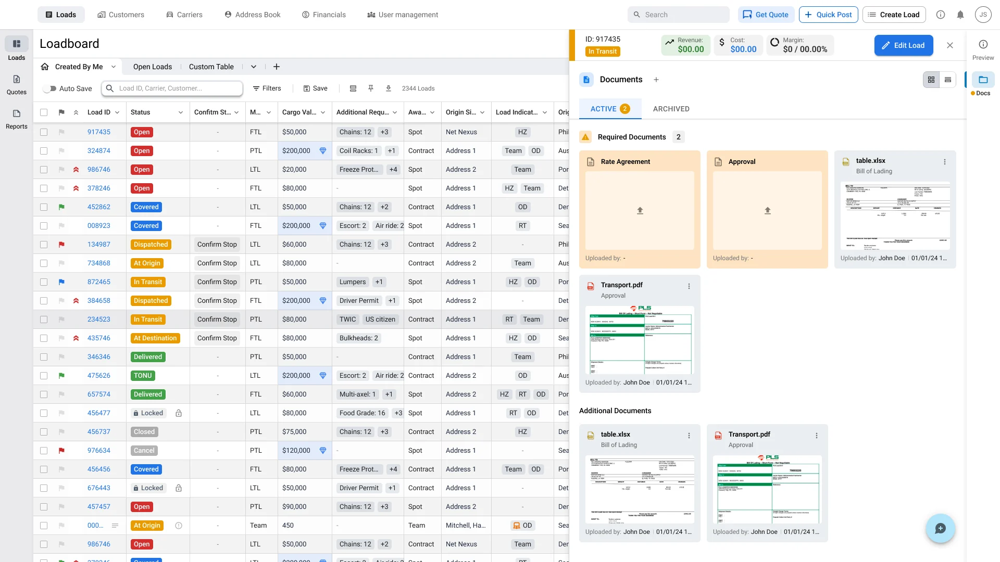
Load details: two views of one journey
A route map gives a spatial view, while the stop summary presents the same shipment as a sequence of locations and events. The two support different ways of understanding it.
An explicit edit action separates reviewing a record from changing it.
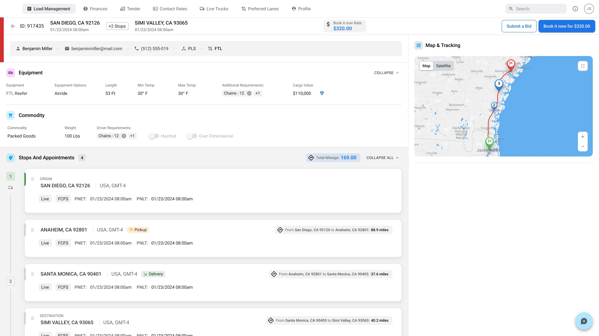
Customer profiles: a relationship that grows
The module brings together contacts, billing details, preferences, credit limits and account ownership. The challenge was to structure this information for ongoing use while keeping the first creation light.
Sales teams can start a profile with a small set of data and complete it as the relationship develops, so an early start doesn't require every account detail. Inside the profile, related information is grouped so people find the context they need for the current task.
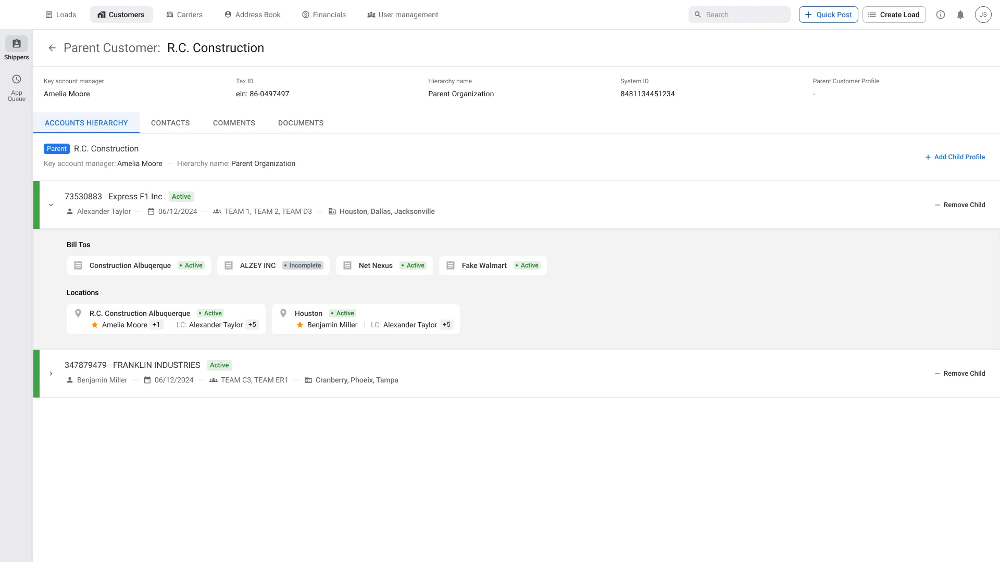
Carrier profiles: a clear hierarchy
Carrier and vendor records cover compliance, billing and relationship details, and support several brokerage workflows. Instead of one long form, the profile is split into meaningful areas, which gives consistent access to the data and a reusable structure for carrier records across the platform.
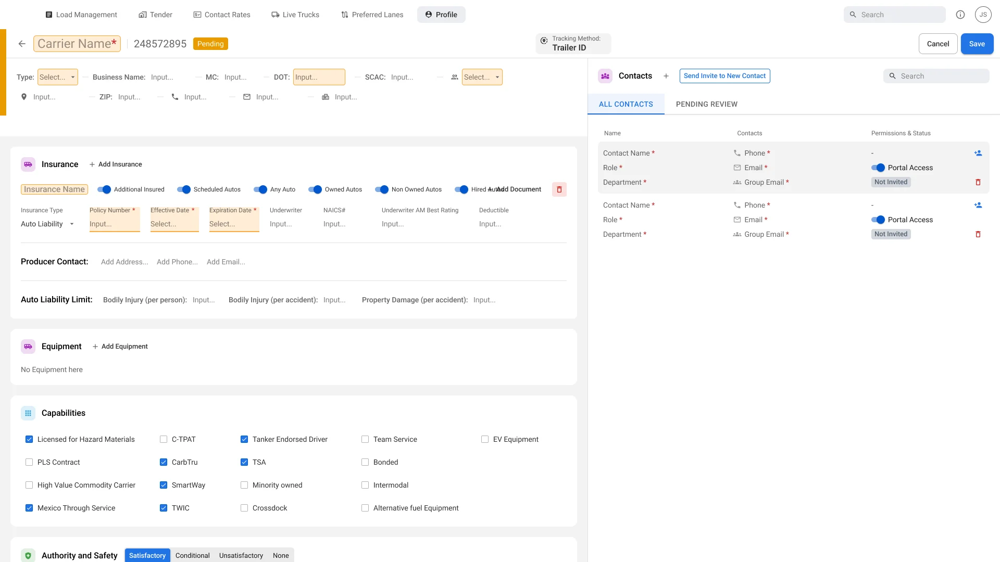
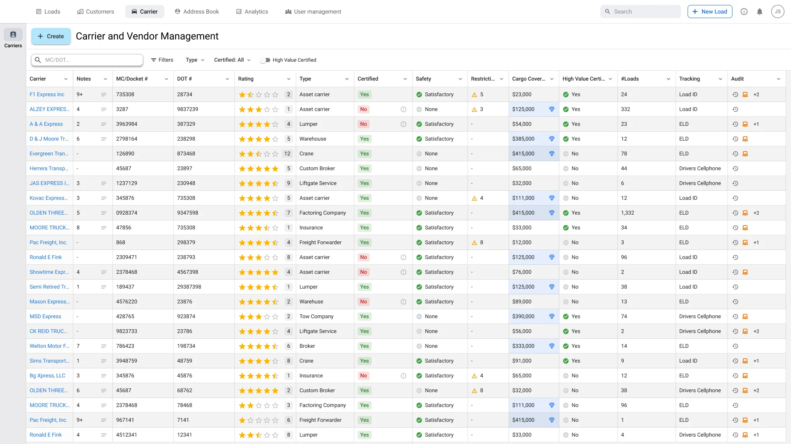
Load management, tenders and adjustments
The platform also covers the work around a load. Load management lists give a filtered view of open and active loads with their status, equipment and rates. The tender area collects the requests that need action, and the bid view puts rate details next to the actions to book or submit a bid.
An adjustments screen brings the financial side of a load into the same system: the details of a requested change, the costs involved and the actions to accept or deny it.
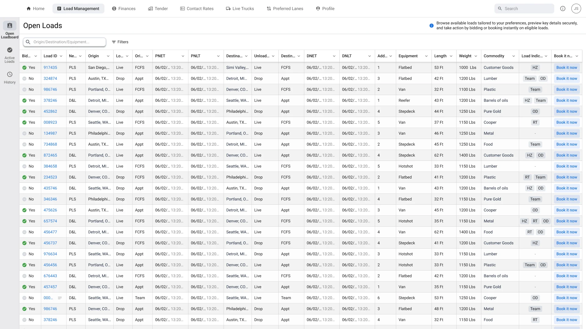
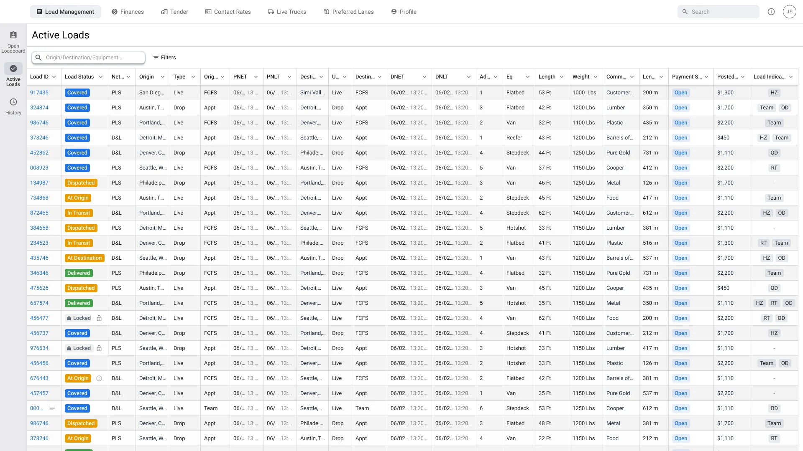
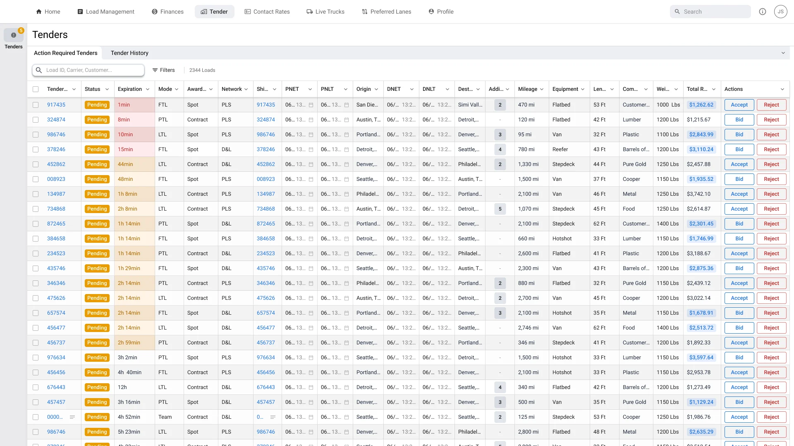
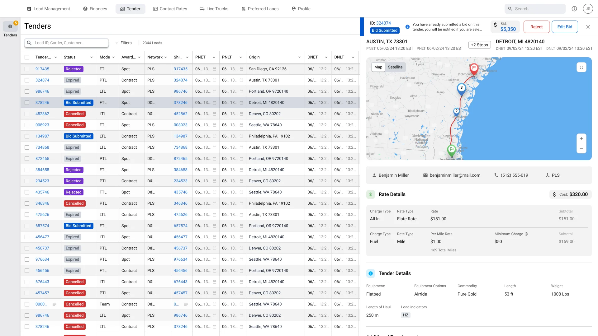
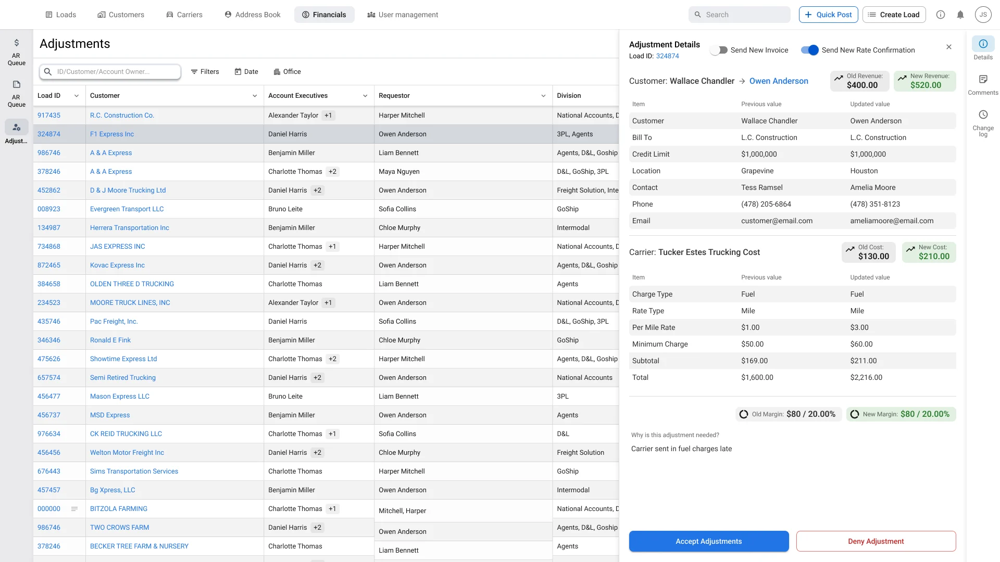
User management: access and responsibility
The administrative module covers platform users, roles and permissions. I focused on making the link between a person, their role and their access easy to read: structured role definitions and activity information give context for administrative decisions.
The work is about the clarity of these interactions; enforcing security belongs to the underlying system.
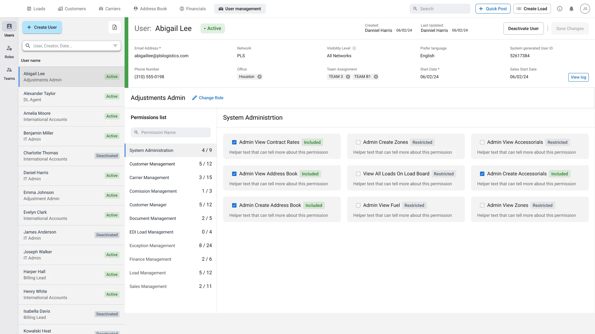
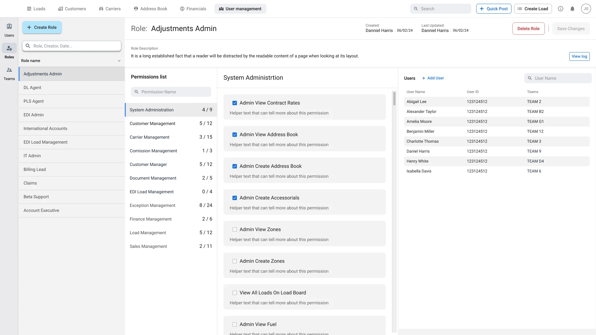
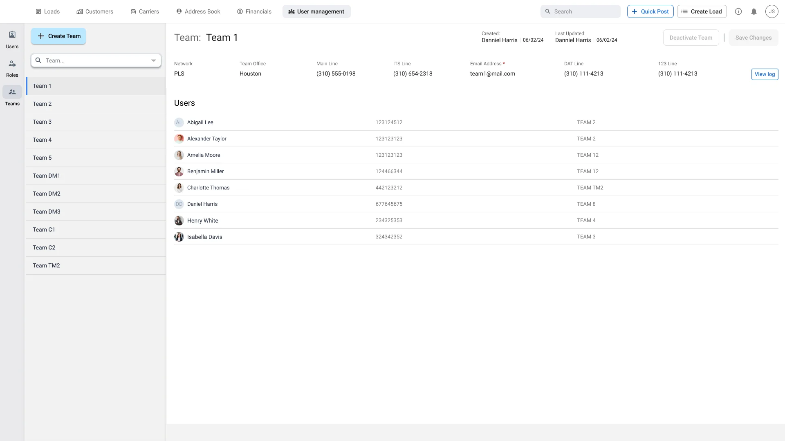
One design system across modules
The platform needed shared patterns for forms, tables, menus, dialogs, navigation and status information. The library covers component categories and variants, variable-based styling, spacing guidance and support for theme changes.
Its main value was consistency in complex workflows: familiar controls make different modules behave like one product, and design effort can go to the domain questions — which information matters, how to group it and what action follows. Flexibility mattered most in data-heavy screens, where the same component has to carry different content, states and levels of detail.
What I took away
The main challenge was balancing information density with task clarity. Showing less was not always the answer: in some workflows people need to compare many records at once, so the design relies on configurable views, consistent signals and a clear step from overview to detail.
The project shaped my approach to enterprise products: understand the operational context, set reusable interaction rules and let the structure of the workspace support different tasks.
Result
A consistent desktop workspace for freight operations: a configurable Loadboard, a detailed load preview, customer, carrier and user-management modules, and a shared component library that connects them.
More cases